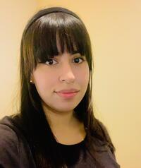

Ana Maria Mosquera Monje | WDD 130
Hello! My name is Ana Maria Mosquera, and I am from Popayan, Colombia. I am currently studying Software Development at BYU Pathway and I enjoy learning more about programming every day. I also love spending time with my family. I am a member of The Church of Jesus Christ of Latter-day Saints, and my faith is an important part of my life. My goal is to keep improving my skills and work toward a successful career as a software developer.